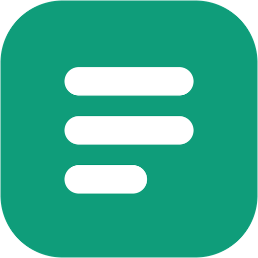

Escreva menos e faça mais ⚡
Guarde os textos que você mais usa e cole qualquer um deles com um atalho, sem abrir nada. Para Windows 10 e 11.
Grátis · Portátil: não precisa instalar, é só extrair o .zip e abrir o ClipAtalho.exe
Cada número cola na hora um texto (ou imagem) que você escolheu: saudação, assinatura, endereço, resposta pronta.
Abre a lista com tudo o que você copiou. Esqueceu qual número é qual? É só olhar e clicar.
Digite uma abreviação como bd1, aperte Tab e ela vira “Bom dia! Tudo bem?”. Você cria os seus.
Prints e imagens copiadas também entram na lista, com miniatura, e colam com os mesmos atalhos.
Fixe os favoritos, reordene arrastando, desfaça com Ctrl+Z, tema claro ou escuro e várias cores.
Nada é enviado pela internet. Backup em texto e pasta compartilhada entre computadores, se quiser.